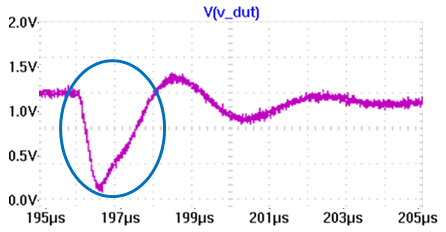
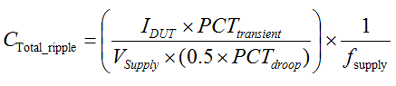

Step 1: Calculate the required total capacitance
This is the first of five steps in the Power Distribution Network (PDN) design. Use the UHC4 / UHC4T impedance calculation spreadsheet to semi-automate your design process.
Connecting a fast transient, high power, low impedance DUT to the tester power supply will have similar to the following characteristics:

To maintain the voltage on the DUT, capacitors on the DUT board need to provide the amount of charge storage, while waiting for the tester power supply to respond. There is a minimum amount of total capacitance that is required to deliver this amount of missing charges, calculated by equation:

| Variable | Unit | Description | Calculator text and cell | |
|---|---|---|---|---|
| CTotal_ripple | µF (Micro‑Farad) |
Calculated total capacitance Needed to stay within specified maximum supply ripple. |
Total C for max ripple | E32 |
| IDUT | A (Ampere) | Maximum DUT supply current | Max DUT Current | D13 |
| PCTtransient | % (Percent) | Percentage of maximum transient current relative to maximum DUT supply current. | Max Current Transient | D15 |
|
Vsupply |
V (Volt) |
Supply voltage |
Supply Voltage |
D12 |
| PCTdroop | % (Percent) |
Allowable amount of supply voltage droop or kick while discharging or charging the capacitor. The maximum ripple is expressed as percentage of VSupply |
Max Ripple Voltage | D14 |
| fSupply | kHz | Do not change. Use the default value of 250 kHz. | Supply Frequency for 0 Open Loop Gain - f(supply) | E25 |
| The calculator cells | E25, E26, and E27 | are constants and not to be changed. | ||
Continue with Step 2: Calculate the max. ESR.
Functional changes
- Introduced in SmarTest 7.2.1